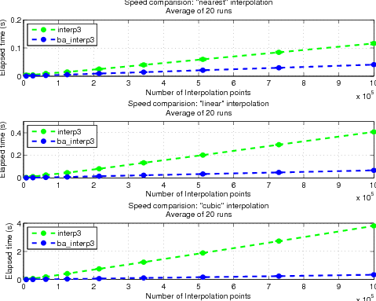

ba_interp3 is a fast interpolation routine for 3D volumes. It can be used as a drop in replacement for matlabs interp3 function. It supports nearest neighbour, tri-linear, and tri-cubic interpolation.
Restrictions: The only restriction is, that the data has to be on a regularly spaced grid (i.e. coming from meshgrid.
Enhancements: The first advantage of ba_interp3 is that it is a lot faster:

Additionally, it can interpolate layered data. If you interpolate a
matrix of size MxNxO x L1xL2x...xLk then each
of the L1*L2*...*Lk layers is interpolated
simultaneously. Think of this as in RGB images, where there would be a
single additional dimension of size three.
An volume of 3x3 Matrices (i.e. the volume derivative) would have two
additional dimensions of size three.